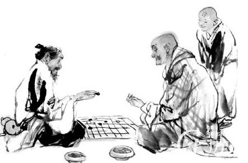
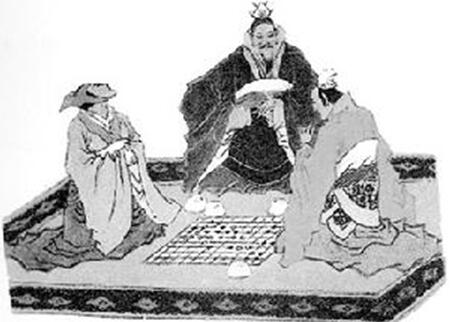

中国围棋文化精神
南朝《述异记》有载，晋樵夫王质，入石室山，观二童子下棋，不觉斧烂柯矣。“质归故里，已及百岁，无复当时之人”。这个烂柯的故事，是为人所津津乐道的棋事，古人有很多关于烂柯的诗句，传颂着其中的围棋精神。之所以如此，是因为其中包涵着中国文化内涵与围棋文化内涵相通的地方。
围棋在东晋被称为“坐隐”、“手谈”，道出了围棋所蕴涵的文化内涵；至北宋，又有徽宗所言“忘忧清乐在枰棋”，围棋又称“忘忧”；烂柯传说流传，围棋又有“烂柯”之名。看看烂柯的故事，从中可以细品出坐隐、手谈、忘忧、烂柯。这四个词，正是围棋文化和中国文化精神暗合的地方。二童子本为仙人，而中国的隐士高人常常被以仙人来看待，那些人总是有限些仙味道的，对局间，只有棋局凸现，而无人事纠纷，是故坐隐。童子坐弈不语，全凭棋局中黑白相交，是谓手谈。世间苦乐全在棋局之外，童子不晓，王质不觉，所以忘忧。一局未竞，世易时移，斧烂柯矣，世间千回百转，竟然不如一局棋的时间长，故言烂柯。
实际上坐隐、手谈、忘忧、烂柯所用的典故均是两晋时期的言谈作品，坐隐、手谈出自《世说新语.巧艺第二十一》，忘忧出自《晋书.祖逖传》，烂柯出自晋人的《志林》。这从另一个方面说明那个时期的围棋已经登堂入室，在理论上、地位上、棋艺上均有质的提高，并在那些名士中广为流传。而三国两晋南北朝时期玄学大行其道，道教开始创立，佛教逐渐兴盛，这不能说是巧合，而是在那样哲学背景的影响下，围棋、围棋的别名、围棋的传说、围棋的故事正是这些思想文化表现的必然产物，并且与玄学，也就是道家的关系极其密切。并且以此为发端，在三者得影响下，向后一直传延着并发扬着其文化精神。
比如围棋被称之为坐隐，正是道家所崇尚隐者风范。道家的代表人物杨朱，逃离人世，遁迹山林，正是一位隐者，老庄的行为，也和隐者相去不远。玄学包含着道家“道可道，非常道”的精神，实际上就是道不可道，只可暗示。庄子曾说，“道不可闻，闻非闻也；道不可见，见非见也；道不可言，言非言也。”不闻之闻，不见之见，不言之言，这就是道家哲学的表现方式，他们不给你精密的论证，严谨的推理，只给你比喻、隐语，让你自己去悟。就像陶渊明的“此中有真意，欲辨已忘言”。实际上他忘言了吗？没有，因为，真意自在心中，无需言出。这就是魏晋的名士风度，不言自言。阮籍是玄学的代表人物，他本人对于围棋的侵淫极深。《晋书.阮籍传》有载，“籍性至孝，母终，正与人围棋，对者求止，籍留与决赌。既而饮酒二斗，举声一号，吐血数升。围棋，在魏晋名士的心目中，已经不仅仅是一种游戏了，而是一种哲学活动，悟道活动，对弈折射出他们的生命哲学，也表现着他们形而上学的苦涩悲凉的思索。围棋黑白二子象征日月阴阳昼夜；圆形棋子象征天象苍穹，棋盘四角可比地象四方；棋局搏杀，沧海桑田；棋盘胜负，世事纷争；诸如此类种种，皆可拟世事，让人自己去悟道，去品世。
从品悟的角度来讲，我们还可以从国画中看出道家的精神，围棋的影响所在。写意的国画讲神似而不是形似，不似为欺世，太似为媚俗，就在这似与不似之间，让人们得以展开想象的空间，得到深刻的启示。在以山水、花鸟为主的中国画里，常常会有一个人，坐在那里欣赏自然美，参悟超越天人的妙道，实际上这里可以体现中老子“道法自然”的味道。又如“踏花归去马蹄香”的传说，那蹄印上翩翩飞舞的几只蝴蝶，正是启示和想象的杰出代表。从国画那些若有若无忽远忽近的启示中，我们可以联想到围棋的棋形变化，那些棋形或轻灵，或厚重，或宏阔，或端凝，整盘棋连在一起，总有一种说不出的味道，其中的意义犹如“远处渺茫的歌声”，其中的意象可闻可不闻，天道可见可不见，机理可言可不言。徐渭那样的大画家，对围棋也是情有独钟，本文开篇所引的那首诗，名字就是《题王质烂柯图》。关于烂柯，宋代郑思肖有《烂柯图》，明代张以宁有《烂柯山图》，徐渭有《王质烂柯图》，清丁光鹏的《烂柯仙迹图》，画家们挺喜欢那烂了的斧柄。杜甫的名句“楚江巫峡半云雨，清簟疏帘看弈棋”，诗中有画，画中有诗，云雨疏帘中，一局棋若隐若现。苏轼曾说此句可画，但是就怕画不成，因为倘若画不出那意境，不画也罢。
道教要讲修道成仙，围棋也成为仙家之物，棋枰之上充满仙机，围棋和神仙的关系密切。围棋的传说中便有许多仙人棋手的故事，比如前面说的烂柯，还有唐朝王积薪蜀中遇神仙婆媳，八仙之中的何仙姑、吕洞宾就擅棋，武当张真人和骊山老母的棋事等等。而这一切，正是和道教的影响密不可分。不仅仅神仙擅棋，道士们修道，也要借助围棋，传说全真教的马钰就是从棋枰对局中悟出了抱守持一的仙道修真要旨。
佛家讲顿悟，围棋讲感觉，棋理佛理相通，围棋也是佛门弟子的爱好。手谈二字，就是高僧支道林命名的。佛经翻译家鸠摩罗什也是此道高手，下棋讲究美感，是个求道派，如同今日之日本唯美的大竹英雄，与人下棋，“拾敌死子，空处如龙凤形”。唐朝的高僧一行本不会下棋，有一次看当时第一高手王积薪与人对弈，看罢一局后，竟然能和王积薪匹敌，并说，“此但争先耳，若年贫道四句乘除语，则人人为国手”。（这两件事都在《酉阳杂编》中有记载）棋理禅理相通，境界达到高妙之时，二者是互通的。崇佛的梁武帝，号称中国的围棋皇帝，棋至逸品。黑白世界犬牙交错，变化莫测，生中有死，死中有生，正是佛门弟子堪破生死的好借助。明朝的中峰和尚有谒，“俗谛事黑子，真谛是白子，十八界内，夺用争先。平地起是非，终难逃生死，纵教看得眼睛穿，翻转棋盘都不是。”（明《太平清话》）
说到这里，人们会问，我们知道，中国传统文化由儒释道三者构成根本，前面谈了道家、道教，释家与围棋的关系，那么儒家呢？
应该说儒家对围棋的看法，不过是小艺耳。《论语.阳货》说，“饱食终日，无所用心，难矣哉。不有博弈者乎？为之犹贤乎已。”话说的再明白不过了，你要是实在没事干，还不如去玩玩六搏、围棋，也比无所事事强。宋儒们的解释就是“圣人非教人博弈也，所以甚言无所用心之不可尔。”孟子更是把“博弈好饮酒，不顾父母之养”当作是不孝之一。也就是说，在儒家眼里，围棋，就是奇技淫巧一类的玩意，不值得提倡，玩玩可以。儒家所谈的君子六艺“礼乐射御书数”，就不包括弈。不过，围棋却传说是由尧造出来的，史称“尧造围棋，丹朱善之。”尧，那是什么人？儒家所称颂的圣人啊，圣人怎么会搞这些奇技淫巧一类的玩意呢？于是有儒者很不平，出来辟谣，唐朝的著名文人皮日休就说，围棋有害诈争伪之道，应该是战国纵横家们搞的，尧那那样有仁义礼信智的圣人，怎么能搞这些玩意？汉朝的大儒贾谊则大声抨击，“失礼迷风，围棋是也”。南朝的《颜氏家训》说起围棋，也说“不可常也”。不过，其后的儒者，没这么着急，北宋时期的儒者大多不想前人那么严肃，对待围棋就温和了许多，比如那个一本正经的拗相公王安石，“每与人对局，未尝致思，随手疾应。觉其势将败，便敛之，谓人曰：本图适性忘虑，反苦思劳神，不如且已。”这就是将围棋当作一种适情游戏罢了，他也经常下棋，但是估计棋艺不怎么样，眼看快要输了，就葫芦了，自己还振振有词，玩嘛，别那么费神。实际上这里所表达的态度就是，只要不为其所惑，玩玩无所谓。
围棋是文人雅士的玩物，虽然包含了天地机理，但是儒者依然以闲情待之。虽说是闲情，但是由于围棋表现了文人雅士的风范，故而儒者也喜欢。这里可以说一下象棋。我们常常在市井街巷看到几个人围成一堆，棋子摔的啪啪乱响，呼喝喧闹，大叫将！将！将！吃了它！蹬了它！然而，你很少看到能有人在大街上摆出围棋摊子，去静雅地手谈几局。那些市井们的象棋举动，对文人而言，实在有辱斯文。围棋，只能和云雨、疏帘、烂柯、青山、绿水、红袖、鸟语、书画、琴箫等等连成一体，构成中国古代文人的水墨图，而不是流于贩夫走卒之徒，构成市井图。围棋是雅士的玩物，象棋是俗人的玩物，文人们借此来表现超凡脱俗。这，也是儒者为什么喜欢围棋的原因之一了。这里，没有贬低象棋的意思，象棋，也是国粹之一，只是文人雅士的偏好，更甚于围棋罢了。
应该说围棋文化所表现的精神内涵，主要是道家精神，其间有和禅理相通的地方，这就是与中国文化暗合的地方，但是也不能就如此定论，因为对弈时中所表现出来的杀伐阵阵，起起伏伏，是不能忽略的。古人仿效《孙子十三篇》，编出了《棋经十三篇》，其中的奇胜正和无不包含着兵家的思想，甚至有很多言论可以算作是《易经》的注脚。中国历史上的围棋皇帝梁武帝的《围棋赋》中，有“尔乃建将军，布将士，列两阵，驱双轨徘徊鹤翔，差池燕起。”这分明是兵家行军布阵了。政治家、军事家唐太宗李世民也有几首围棋诗，其中一首为：“治兵期制胜，裂地不要勋。半死围中断，全生节外分。雁行非假翼，阵气本无云。玩此孙吴意，怡神静俗氛。”这里的围棋，也许不仅仅是围棋了，那是李世民征战多年军事经验的总结，甚至包含着政治理念。帝王读弈，自是不俗啊。围棋中也包含着做人的道理，《棋经》有言，“持重而廉者多得，轻易而贪者多丧，不争而自保者多胜，务杀而不顾者多败。”这哪里是在下棋，分明是教做人。清朝的尤侗也有一句，“试观一十九行，胜读二十四史。”这高度也不低，围棋和史家也挂上钩了。《三国演义》、《西游记》、《红楼梦》、《金瓶梅》、《儒林外史》、《聊斋志异》、《三言二拍》等等中国古典小说中，更是常常能看到围棋的影子。
说了这么多，实际上，围棋这种小小的博弈游戏，已经被众多喜爱它的人，依照各自的人生观、世界观赋予了各种意义，它已经渗透到中国文化世界的方方面面，到处都有围棋的影子，到处都有参悟的玄机。烂柯之中，未尝不蕴涵着中国文人士大夫的人生理想。人生如棋，有进有退；棋如人生，胜负寻常。闲敲棋子中，一局千载。